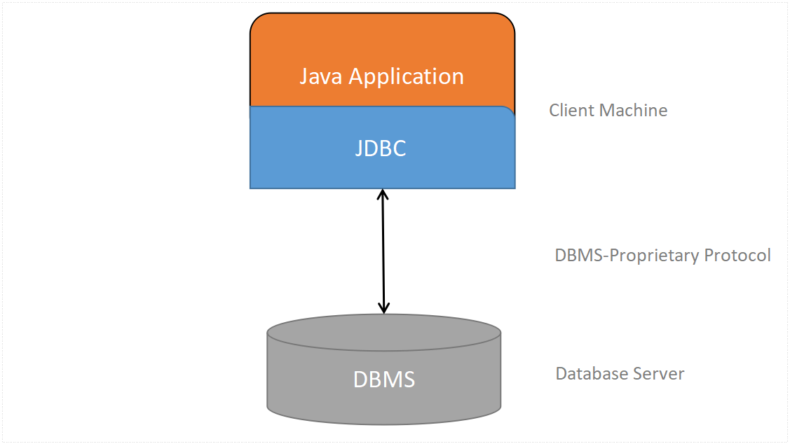

Java JDBC Database Access
In This tutorial we will learn how to write a java code to access database using JDBC API.
To access database using JDBC API, we need to follow below 5 steps :
JDBC Architecture
There are 2 ways to establish a JDBC connection
DriverManager class.Datasource interfaceExamples are given for both the ways of establising a JDBC connection with the CRUD(Create,Read,Delete,Update) operations.
Java JDBC Examples
Connecting database using JDBC Driver(DriverManager Class). Executing a simple select query using Statement Class.